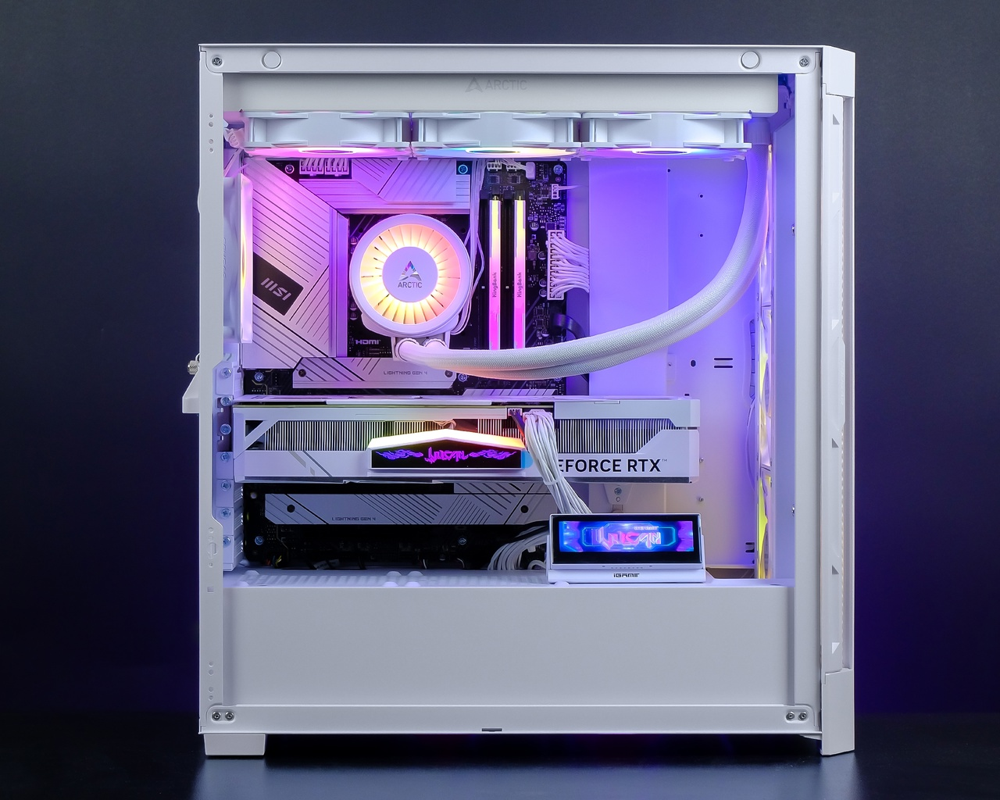
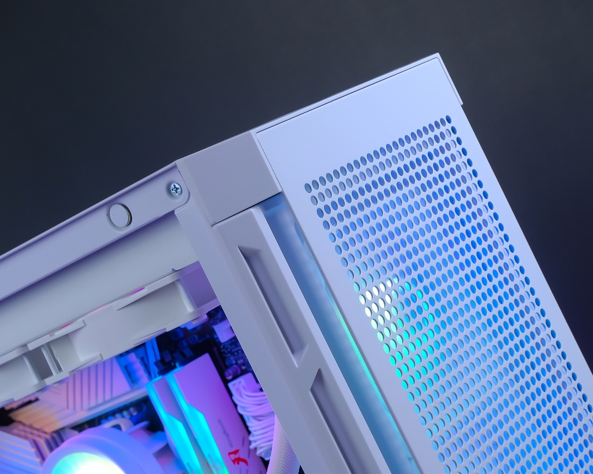
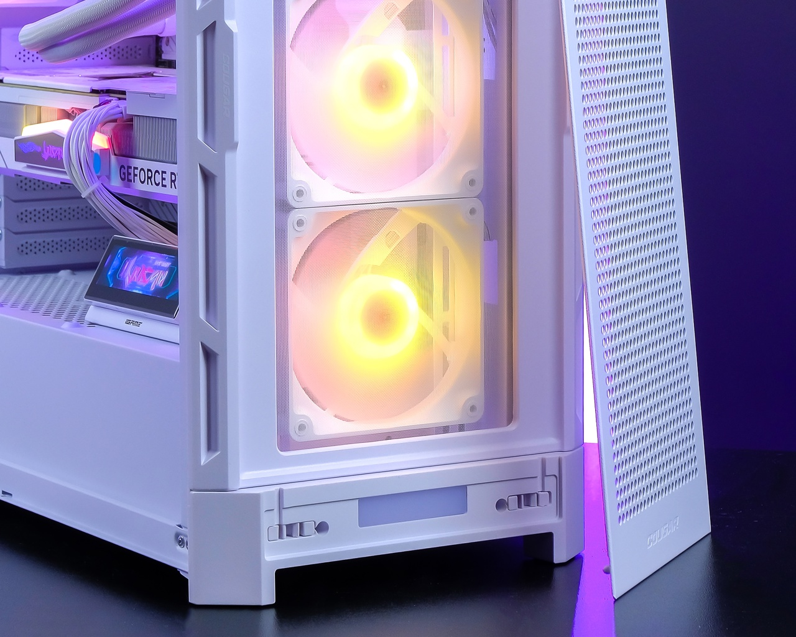
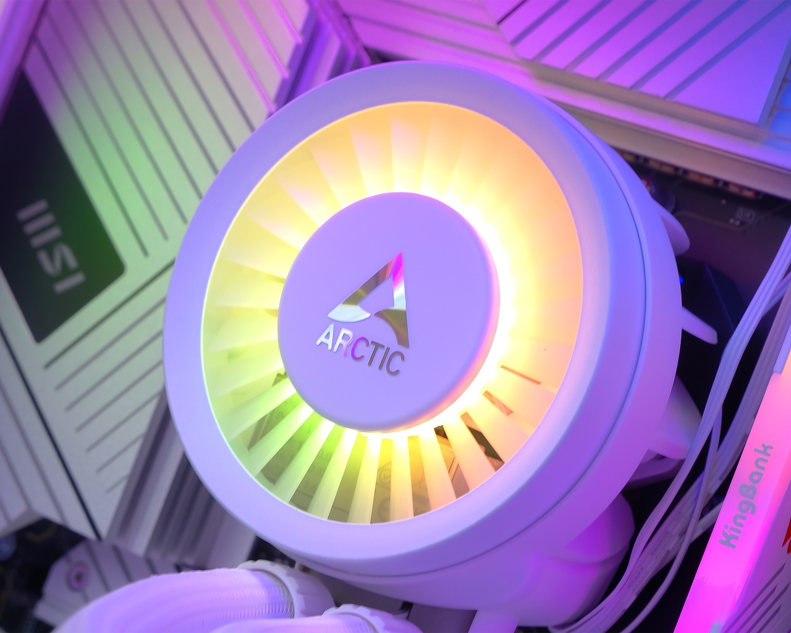
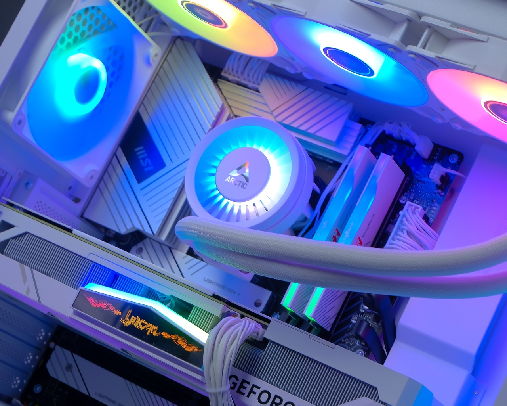
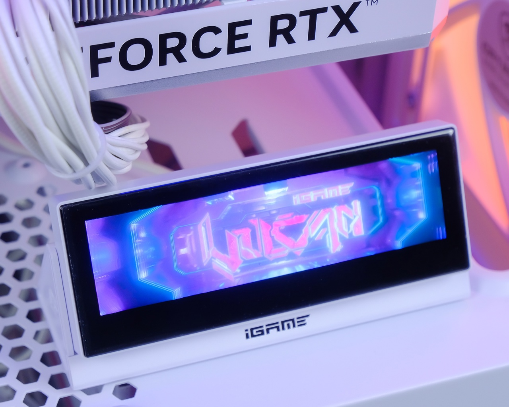
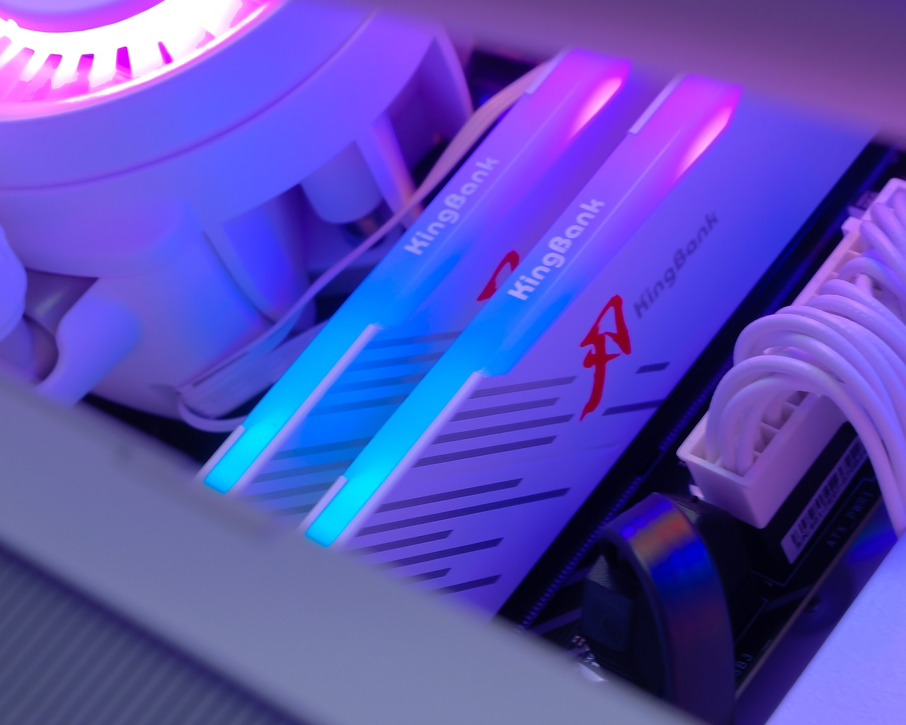

Проект команды King-Komp / 01
Белый игровой
компьютер
Intel Core i5-14600KF RTX 4070 SUPER iGame
Белый игровой компьютер для клиента — так команда King-Komp описывает эту сборку в своём архиве.

01 / Контекст
Игровая задача.
Белое исполнение.
В исходном проекте зафиксированы игровое назначение, белое исполнение и сборка для клиента.
02 / Конфигурация проекта
Что вошло в сборку
Исторический состав по материалу King-Komp. Компоненты сохранены без замены на актуальную линейку KORSAC.
- Процессор
- Intel Core i5-14600KF
- Видеокарта
- RTX 4070 SUPER iGame
- Материнская плата
- MSI Z790-A MAX Wi-Fi
- Оперативная память
- DDR5 KingBank 32GB 6000MHz
- Накопитель
- Kingston KC3000 1TB
- Корпус
- Cougar Airface Pro White
- Охлаждение процессора
- ARCTIC Liquid Freezer III 360
- Блок питания
- Deepcool PN750M 750W White
03 / Фотографии проекта
Сборка в деталях
-

-

-

-

-

-

-

04 / Происхождение
Сохранить историю сборки
Проект выполнен командой King-Komp. Здесь показаны его назначение и конфигурация; исходная публикация остаётся связанной с архивом команды.
Оригинальный проект на King-Komp